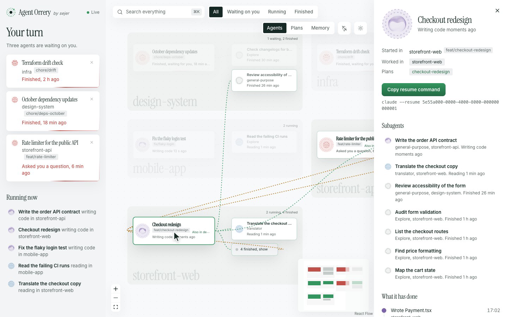
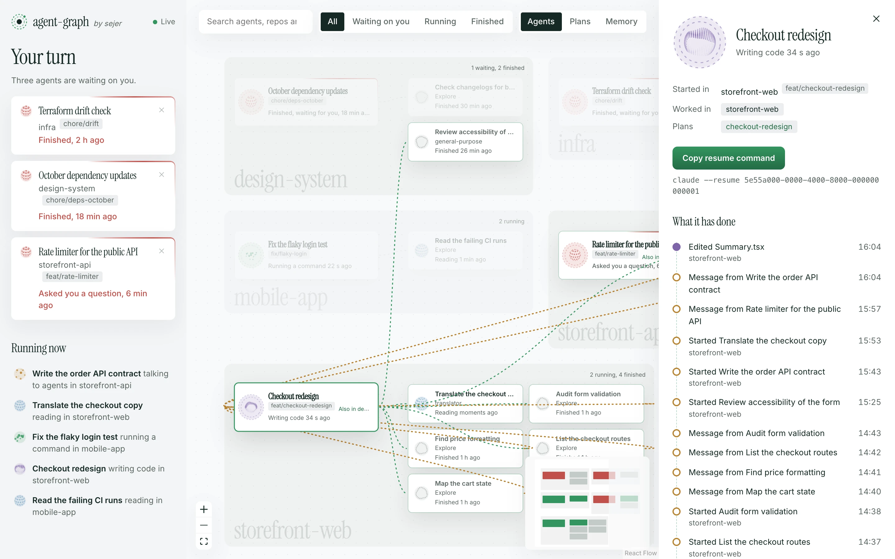
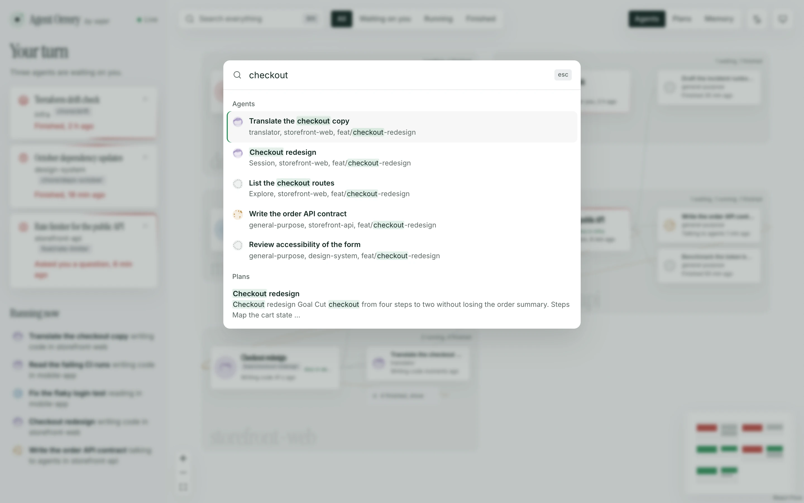
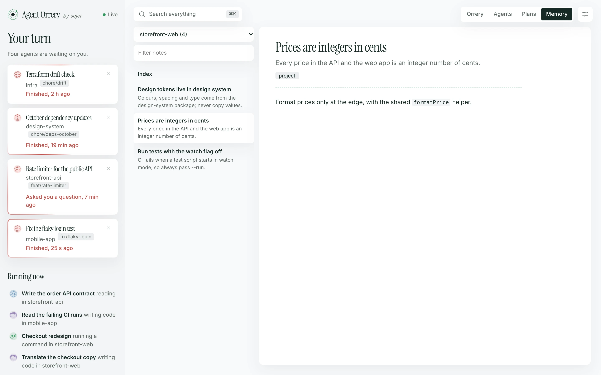
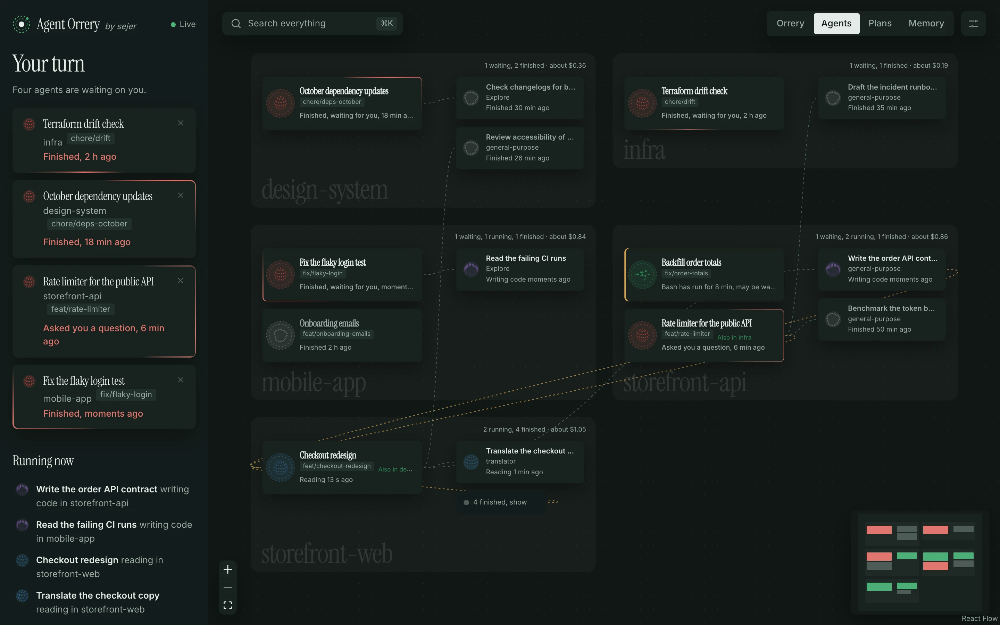

Your turn
Every session that finished or asked you something, oldest first, with how long it has waited. The tab title shows the count. Dismiss one until it does something new.
A live map of your Claude Code agents, and what’s waiting on you.
See every session and subagent, the repo each one is working in, who started whom, and which sessions need your reply.
Install with your agent. Paste this into Claude Code:
Install Agent Orrery for me: clone https://github.com/Luis-Sejer/agent-orrery and follow its INSTALL.md.

Made-up sessions, the same ones pnpm demo gives you. Watch the launch video, 25 seconds with sound.
Run a few Claude Code sessions with subagents and it gets hard to keep track. Which one asked you a question an hour ago? Which agent is editing the web app for a session you started in the API? Did that subagent finish?
Every session that finished or asked you something, oldest first, with how long it has waited. The tab title shows the count. Dismiss one until it does something new.
Each agent sits in the repo its work touches, not the folder its session started in. A session started in storefront-api whose subagents edit storefront-web reaches across into that room.
Click an agent to light up its parent, its subagents and everyone it messaged, and dim the rest. A drawer shows what it has done, step by step, and a command to resume the session.
Press ⌘ K to find agents by name, repo or branch, and plans and memory notes by what they say.
Turn them on and your browser tells you when a session starts waiting on you while you’re in another tab.
Read the plans and memory notes Claude has saved, by project. Plans link back to the sessions that wrote them.
Messages between agents travel along the lines as they’re sent.
cat and grep included



There’s nothing to set up in Claude: no hooks, no plugins, no MCP servers. Agent Orrery follows the transcript files and draws what it finds.
Every session is saved to ~/.claude/projects/<project>/<session>.jsonl, with each subagent in a file beside it.
As soon as a file changes, it picks up what was added and keeps the metadata: titles, tool names, file paths and times.
Rooms come from the nearest git repository above each file an agent touched. Orb colours come from its last tool, and messages from SendMessage calls and their replies.
The page on 127.0.0.1 updates live. A session is waiting on you when its last reply ended its turn, or it asked a question you haven’t answered.
They hold your code, your prompts and sometimes secrets, so Agent Orrery is built to keep them in.
127.0.0.1, and Docker publishes it there only.GET requests.It runs in Docker, or straight from source with Node 24. Then open http://127.0.0.1:4777.
Ask Claude Code, or any coding agent:
Install Agent Orrery for me: clone https://github.com/Luis-Sejer/agent-orrery and follow its INSTALL.md.
INSTALL.md walks the agent through checking Docker, writing settings for your machine, starting the container and checking it works. It never touches your Claude settings.
Needs Docker Desktop, or Docker on Linux.
git clone https://github.com/Luis-Sejer/agent-orrery.git cd agent-orrery printf 'AGENT_ORRERY_UID=%s\nAGENT_ORRERY_GID=%s\n' "$(id -u)" "$(id -g)" > .env docker compose up -d --build
The container comes back after a crash and whenever Docker starts. To have it after a reboot, turn on Start Docker Desktop when you sign in in Docker Desktop’s settings.
Needs Node 24 and pnpm (corepack enable).
git clone https://github.com/Luis-Sejer/agent-orrery.git cd agent-orrery pnpm install pnpm build pnpm start
Made-up sessions in five made-up repositories, with agents that keep working while you watch. Nothing of yours is read.
git clone https://github.com/Luis-Sejer/agent-orrery.git cd agent-orrery pnpm install pnpm demo
Then open http://127.0.0.1:4780.
No. It reads files Claude Code writes anyway, and adds no hooks.
No. It reads the Claude Code files on the machine it runs on.
The room is the repository its tools touched most. An agent that only ran shell commands, without paths, stays with its session. In Docker, repositories outside AGENT_ORRERY_CODE_DIR can’t be seen.
Yes. Set AGENT_ORRERY_UID, AGENT_ORRERY_GID and AGENT_ORRERY_CODE_DIR to match your machine.
A clockwork model of the planets, each on its orbit around the sun. Agent Orrery does the same for your agents and the repositories they work in.